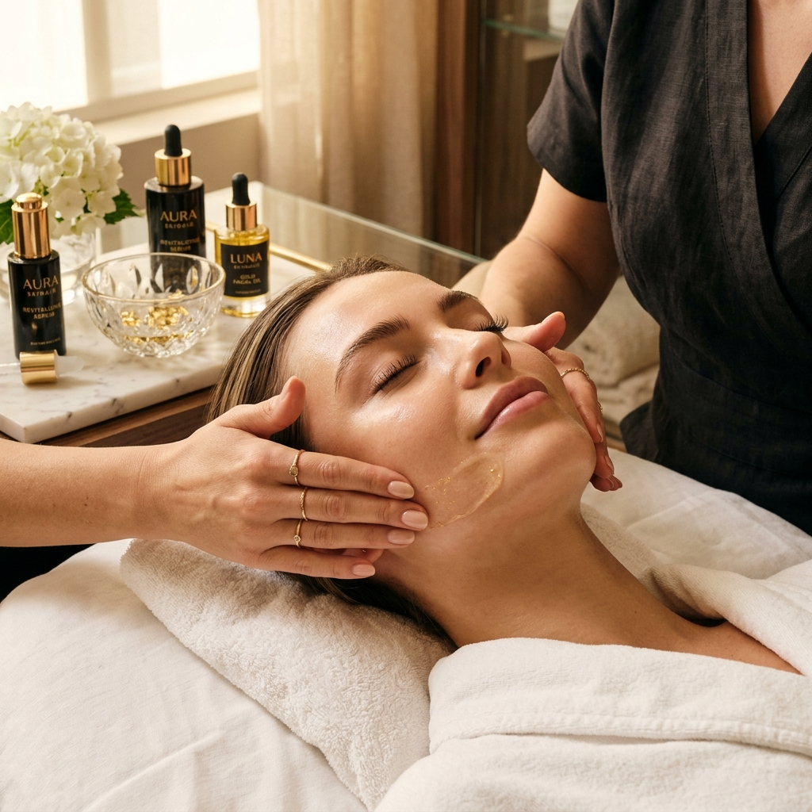
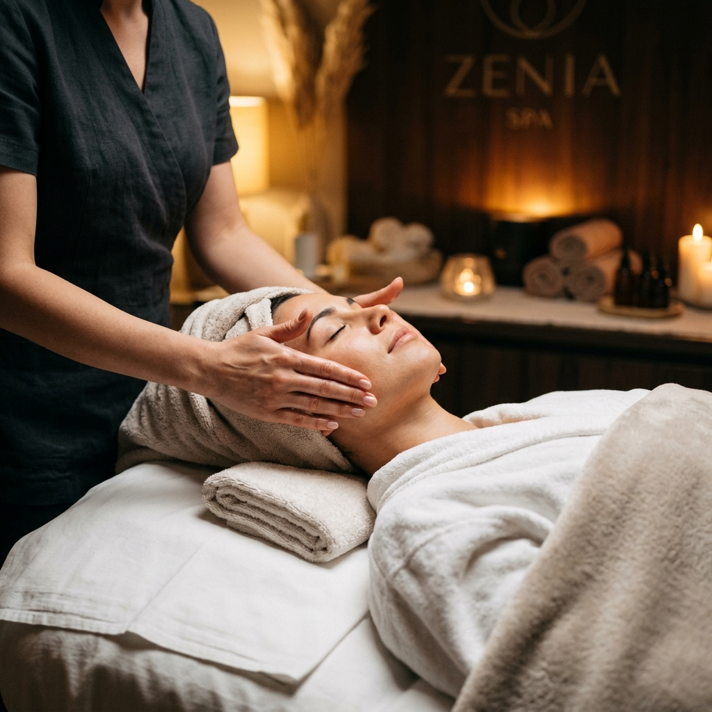
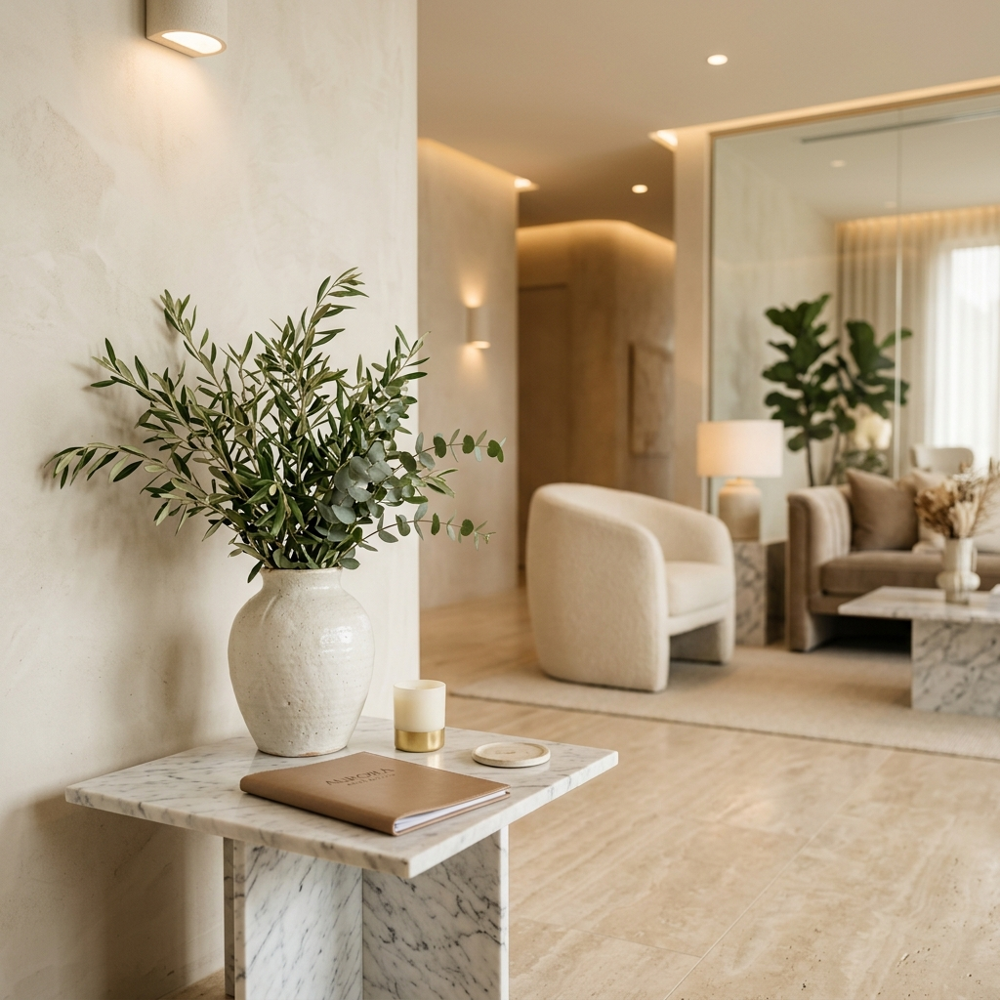
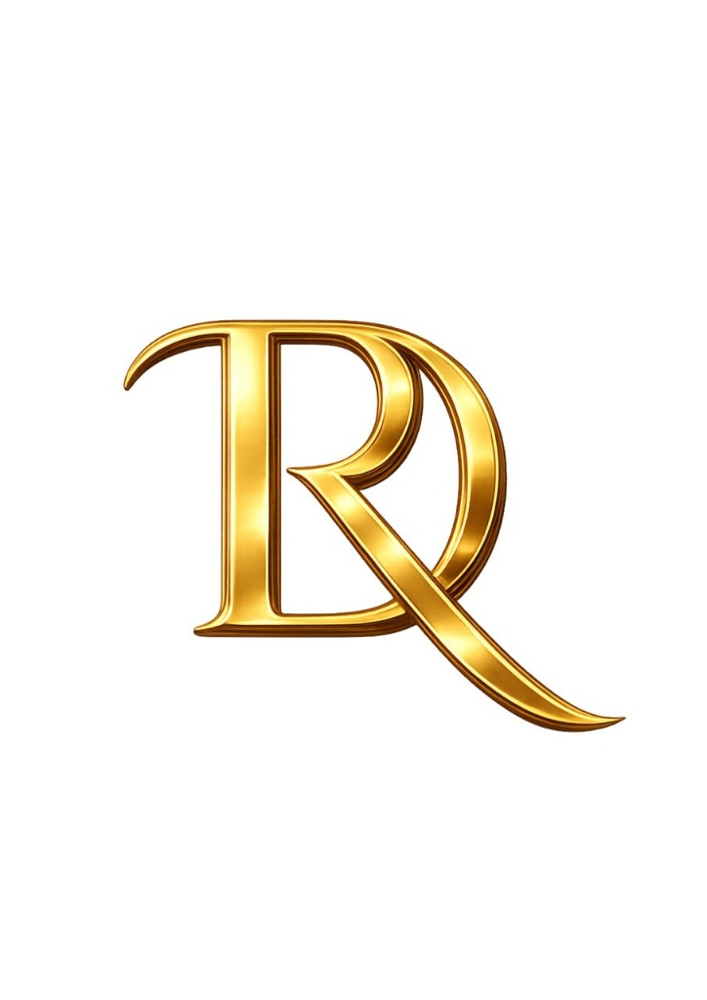

01Harmonização facial
Proporção, sutileza e planejamento para o rosto.
ESTÉTICA AVANÇADA EM PARAUAPEBAS
Tratamentos faciais e corporais pensados para valorizar o que já existe em você.
Agende sua avaliação ↗SOBRE O INSTITUTO
O Instituto Rafael Dias une conhecimento, tecnologia e um olhar individual para construir resultados que conversam com a sua história.
TRATAMENTOS

01Proporção, sutileza e planejamento para o rosto.

02Cuidados avançados para a qualidade e vitalidade da pele.
Protocolos definidos para os seus objetivos, com acompanhamento em cada etapa.
Conheça os tratamentos →RESULTADOS REAIS
Todo procedimento é orientado por avaliação presencial, indicação responsável e expectativas claras.
Falar com a equipe
A EXPERIÊNCIA

RESPONSÁVEL TÉCNICO
Especialista em harmonização facial, com atuação em procedimentos estéticos e reparadores da face.
Conheça o Instituto →FALE COM A GENTE
Parauapebas · Pará | +55 94 9183-0101